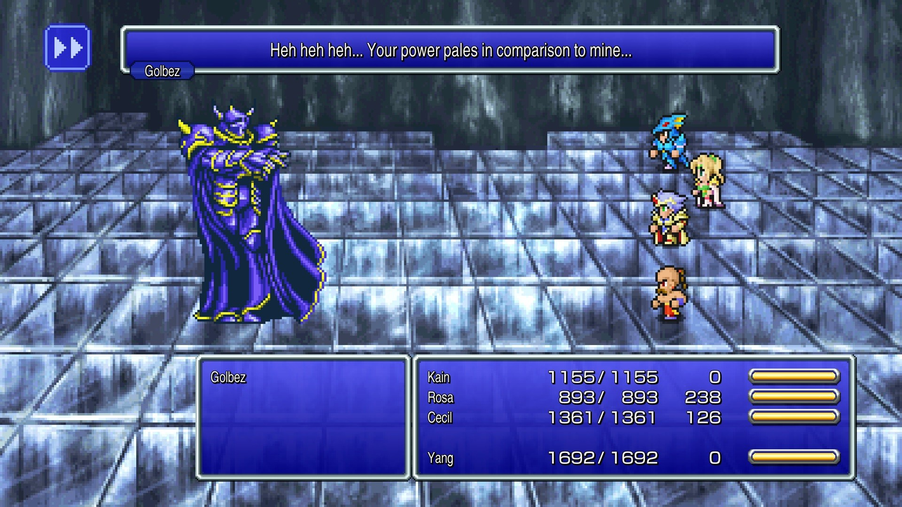

TOP 10 JOGOS RETRÔ
Tetris
Resident Evil 4
Street Fighter II
Pac-Man
Super Mario World
Team Fortress 2
Super Mario 64
Tibia
Final Fantasy VII
Ragnarok Online
Final Fantasy VII

Final Fantasy IV é um jogo eletrônico de RPG desenvolvido e publicado
pela Square para o Super Nintendo Entertainment System. Lançado em
1991, foi o quarto jogo principal da série Final Fantasy. O jogo segue
a história de Cecil, um cavaleiro negro que tenta impedir que o mago
Golbez tome o controle de poderosos cristais e destrua o mundo. Em sua
jornada ele é auxiliado por um grupo de aliados. IV introduziu várias
inovações que se tornariam padrão na franquia Final Fantasy e nos RPGs
eletrônicos de forma geral. Seu sistema de combate "Active Time
Battle" foi utilizado em outros cinco jogos subsequentes da série e,
diferente de outros títulos, deu aos seus personagens uma classe que
não podia ser alterada.
Final Fantasy IV recebeu conversões para diferentes plataformas. Uma
recriação para Nintendo DS com gráficos tridimensionais foi lançada em
2007 e 2008. O jogo foi chamado de Final Fantasy II durante seu
lançamento inicial no ocidente porque suas prequelas Final Fantasy II
e Final Fantasy III não haviam sido lançadas fora do Japão na época.
Entretanto, edições posteriores utilizaram o título original.
O jogo é considerado um marco da série Final Fantasy e do gênero RPG
devido seu enredo focado nos personagens, uso de novas tecnologias e
trilha sonora composta por Nobuo Uematsu. Suas várias versões já
venderam mais de quatro milhões de cópias mundialmente. Uma sequência
chamada Final Fantasy IV: The After Years foi lançada em 2008 para
celulares japoneses, recendo uma conversão para Nintendo Wii no ano
seguinte. Tanto IV quanto The After Years posteriormente também
receberam versões para PlayStation Portable reunidas em uma compilação
chamada Final Fantasy IV: The Complete Collection.